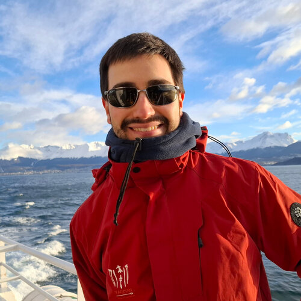

| Email: | santiago [dot] arranz-olmos [at] mpi-sp [dot] org |
| DBLP: | https://dblp.org/pid/304/6207 |
I'm a PhD student of Gilles Barthe at MPI-SP.
I'm interested in programming language theory and its application to security.
I did my Master's at FaMAF (UNC), advised by Miguel Pagano. The thesis is "Soporte para ARM en un compilador verificado" (local copy).
| 2025 | Mar 31st |
Martín Rodríguez (Licenciatura en Ciencias de la Computación, like a Master's degree)
|
| 2026 | Jan 11th |
Reviewed for Principles of Secure Compilation (PriSC) |